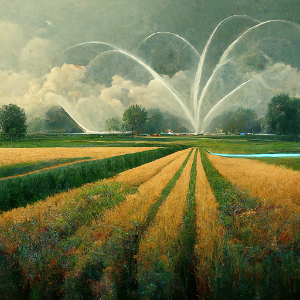

1. Planning Your Farm Layout:
Sketch out the layout of your farm, considering factors like sunlight, water sources, and accessibility.
Designate areas for different crops and features.

2. Soil Testing for Crop Selection:
Conduct soil tests to determine nutrient levels and pH, aiding in selecting the most suitable crops.
Understand the specific needs of your soil for optimal plant growth.
3. Irrigation System Setup:
Plan and install an efficient irrigation system to ensure consistent water supply for your crops.
Consider drip irrigation, sprinklers, or other methods based on your farm's requirements.
4. Crop Planting and Seed Selection:
Select high-quality seeds based on your crop choices and plant them following recommended spacing and depth.
Consider companion planting for better pest control and nutrient utilization.
5. Pest Management Strategies:
Implement integrated pest management strategies to protect your crops from pests and diseases.
Explore organic and sustainable methods for a healthy farm ecosystem.
6. Nutrient Application and Fertilization:
Apply fertilizers based on soil test results and crop requirements to ensure optimal nutrient levels.
Consider organic alternatives and monitor nutrient levels throughout the growing season.
7. Harvesting and Yield Monitoring:
Plan the timing of your harvest and implement proper techniques for each crop.
Use yield monitoring tools to assess the success of your farming practices.
8. Post-Harvest Handling and Storage:
Implement proper post-harvest handling practices to maintain the quality of your produce.
Invest in suitable storage facilities and techniques to prolong shelf life.
9. Continuous Improvement and Record-Keeping:
Regularly evaluate your farming practices and keep detailed records of crop performance and observations.
Use data to make informed decisions for continuous improvement on your farm.